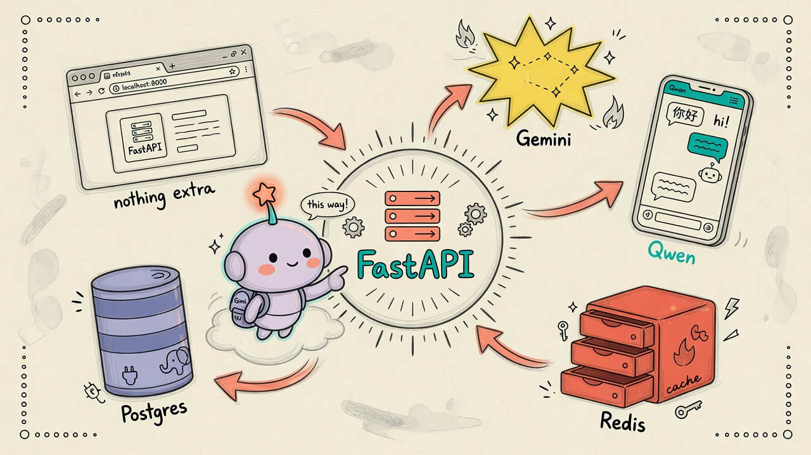
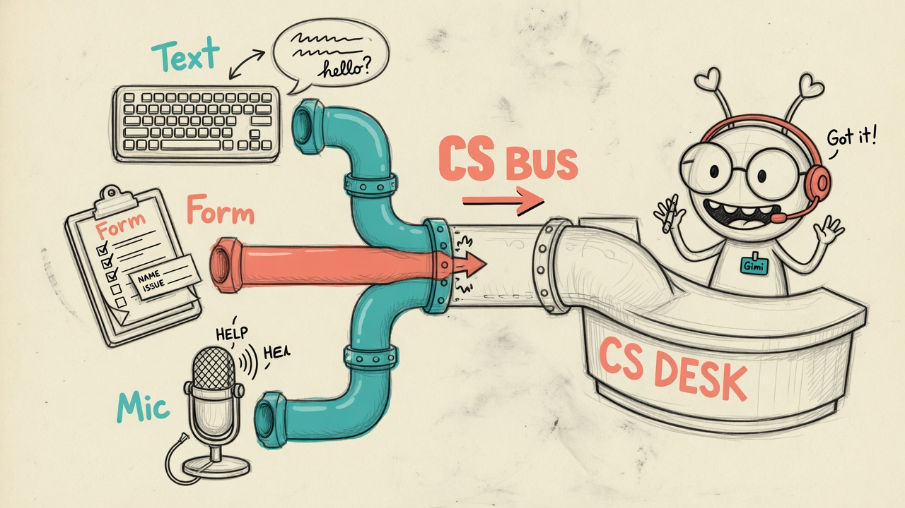

test0719d → video
CATCH CRM · 架構說明
客服總線 + 多庫 RAG
真實庫表的 AI 展示台
真實庫表的 AI 展示台
Postgres · Redis · LAN Qwen · Gemini
經 FastAPI :18720 串成可演示的 CRM AI 能力
客服多模態
知識庫路由
mmrag · HyDE
Wiki · 農業 · 收據
① LAN 基建
FastAPI 中樞五件套
瀏覽器只打本站；資料與模型在遠端 LAN。
- Postgres catch_crm · 真實 KPI
- Redis · 記憶與索引
- Qwen :8080 · 對話與路由
- Gemini · 識圖與語音 STT

② 客服總線
文字 · 表單 · 麥克風
同一面板進線；語音經 Gemini 轉寫後進入目前 mode。
- 知識庫路由（預設）
- 部門 resolve / escalate
- 記憶 · SQL · 填表 · CRM

③ 知識庫路由
一問自動選庫
分類 → 專庫回答；弱命中回退客服 FAQ。
- support · mmrag · wikiband
- sql · agri · crm · form
- POST /api/cs/kb-route

④ RAG 垂直
多模態 · HyDE · 分頁
圖文音進 Redis；可選 HyDE 提升短問命中。
- 農業 · 天氣／作物／RSS
- Wiki 樂團 · BM25
- 收據 · Gemini OCR → PG

怎麼開
展示台 · 架構頁 · 本片
展示台
說明頁
本片專案
http://127.0.0.1:18720/說明頁
test0719d/index.html · /crm-explain本片專案
test0719f-crm-video · HyperFrames